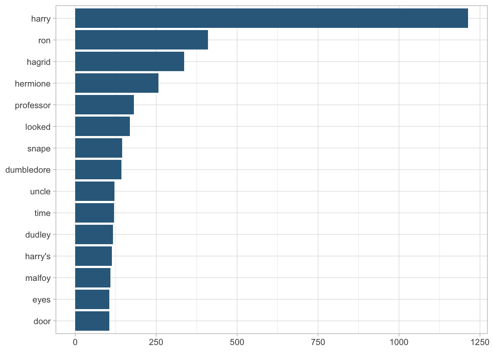
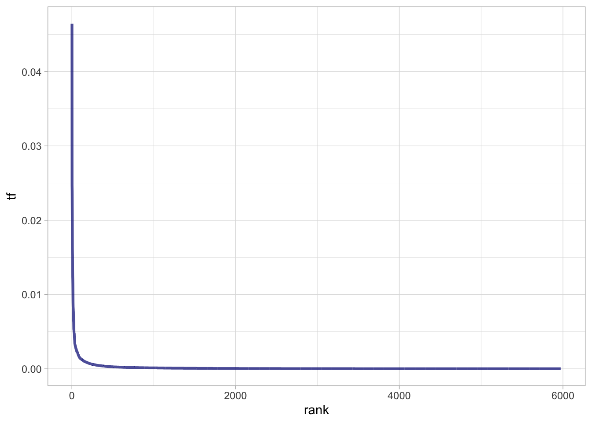
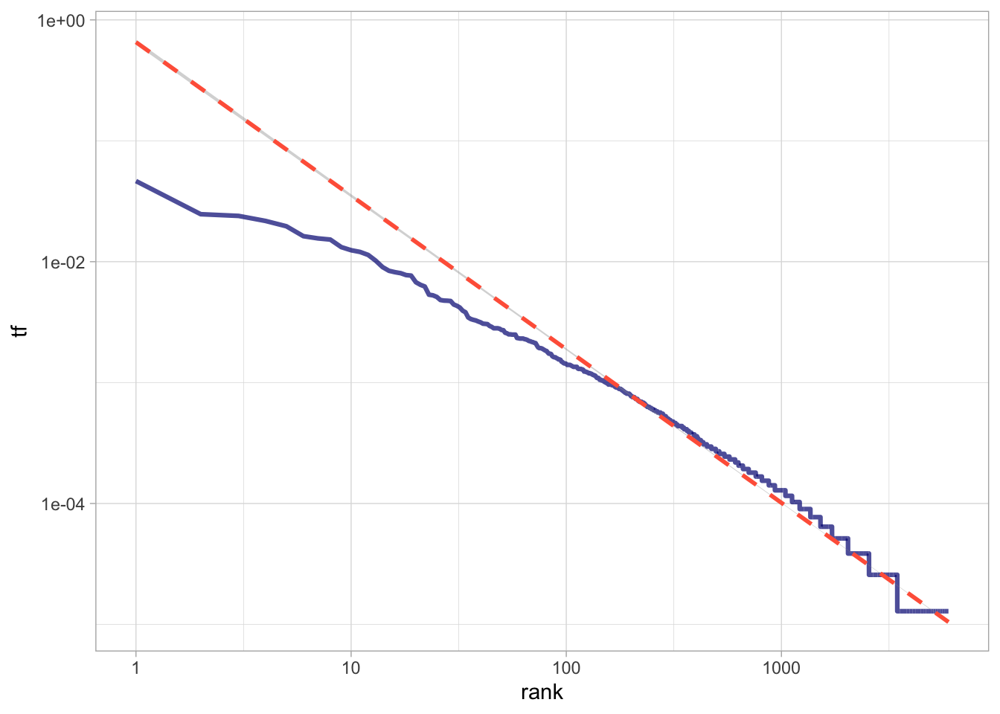
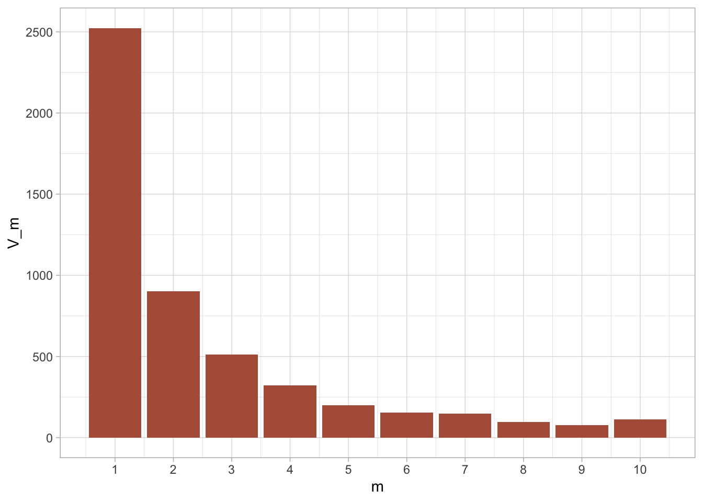
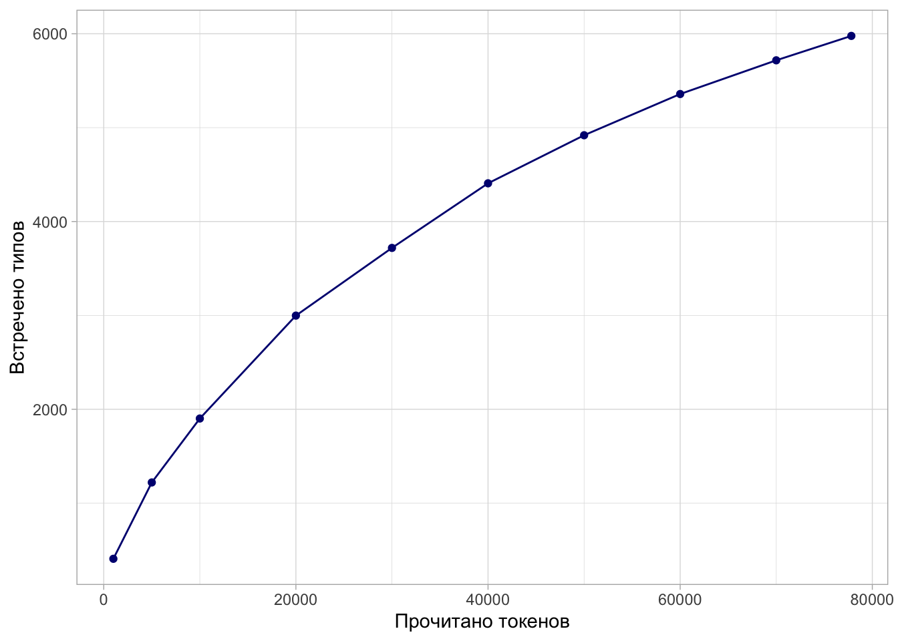
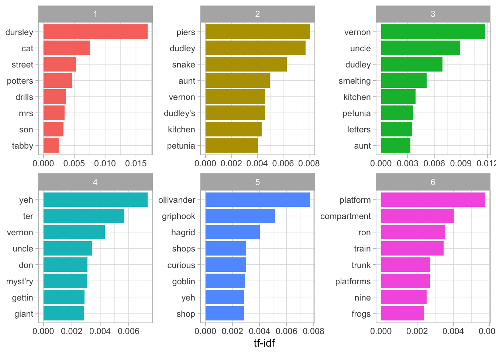
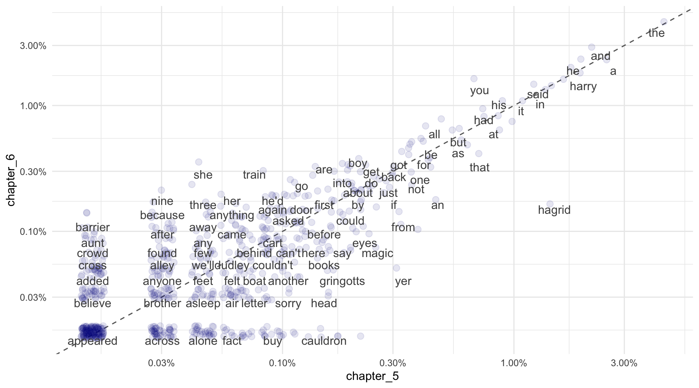
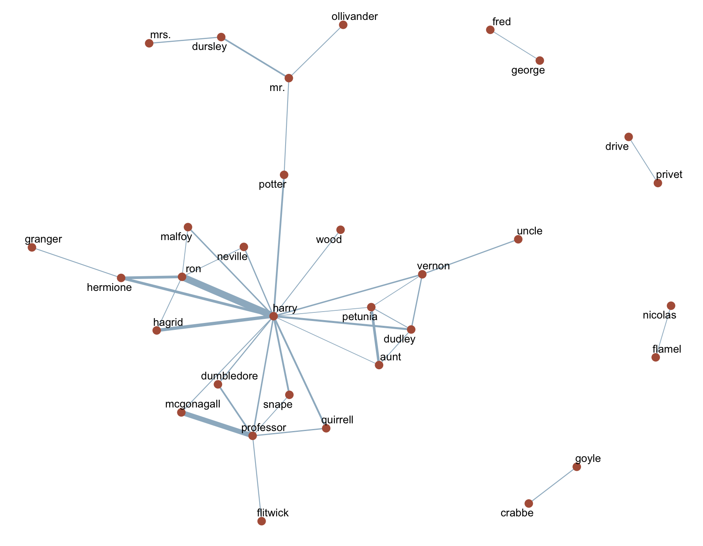
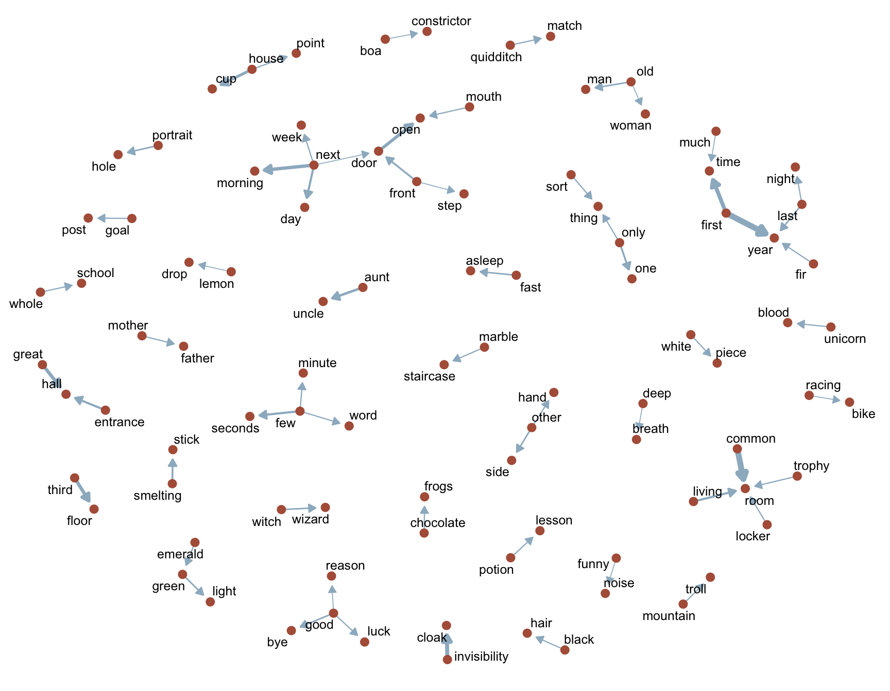

library(tidyverse)
library(tidytext)
library(udpipe)10 Токенизация и лемматизация
Основные этапы NLP включают в себя токенизацию, морфологический и синтаксический анализ, а также семантический анализ. В этом уроке речь пойдет про первые три этапа. Мы научимся разбивать текст на токены, находить леммы и морфологические характеристики слов, а затем посмотрим, как распределены слова в тексте и какие из них образуют устойчивые сочетания.
Материалом послужит первая книга о Гарри Поттере. Все примеры взяты из одного романа, поэтому результаты разных методов можно сравнивать друг с другом.
10.1 Токенизация
10.1.1 Данные
Текст романа хранится в пакете harrypotter, который устанавливается с GitHub.
remotes::install_github("bradleyboehmke/harrypotter")Каждая книга в пакете — это символьный вектор, один элемент которого соответствует одной главе.
library(harrypotter)
class(philosophers_stone)[1] "character"length(philosophers_stone)[1] 17str_trunc(philosophers_stone[1], 80)[1] "THE BOY WHO LIVED Mr. and Mrs. Dursley, of number four, Privet Drive, were p..."В начале каждой главы стоит ее название. От текста оно отделено не обычным пробелом, а символом (так называемый идеографический пробел). Для глаза они похожи, но для регулярного выражения это разные символы. Сложим главы в таблицу и отделим названия от текста.
chapters <- tibble(
chapter = seq_along(philosophers_stone),
text = philosophers_stone
) |>
mutate(
title = str_extract(text, "^[^ ]+"),
text = str_remove(text, "^[^ ]+ +"),
text = str_squish(text)
) |>
select(chapter, title, text)
chaptersВыражение ^[^ ]+ означает: от начала строки все символы, кроме . Название главы мы сохранили в отдельном столбце, чтобы его слова не попали в подсчеты.
10.1.2 Виды токенов
Токенизация — процесс разделения текста на составляющие (их называют «токенами»). Токенами могут быть слова, символьные или словесные энграммы (n-grams), то есть сочетания символов или слов, даже предложения или параграфы.
Токенизировать можно в базовом R с использованием регулярных выражений, и Jockers (2014 г.) прекрасно показывает, как это можно делать. Но мы воспользуемся двумя пакетами, которые предназначены специально для работы с текстовыми данными и разделяют идеологию tidyverse: tidytext (Silge и Robinson 2017 г.) и tokenizers (Hvitfeldt и Silge 2022 г.).
Функция unnest_tokens() из пакета tidytext принимает на входе тиббл, название нового столбца, куда будут «сложены» токены, и название столбца с текстом. Результат — «опрятный» датасет: один токен — одна строка.
example <- tibble(text = "Owls see owls. An owl!")
example_tokens <- example |>
unnest_tokens(word, text)
example_tokensПолучилось пять строк, то есть пять токенов — пять употреблений слов. Разных написаний среди них четыре: owls встречается дважды. Разные единицы называют типами.
example_tokens |>
summarise(tokens = n(), types = n_distinct(word))Заметим, что owl и owls — разные словоформы одной леммы owl. Пока мы не провели лемматизацию, это два разных типа.
Аргумент token позволяет выбрать единицу: "words" (по умолчанию), "characters", "character_shingles", "ngrams", "skip_ngrams", "sentences", "lines", "paragraphs", "regex", "ptb" (Penn Treebank).
small <- tibble(text = "An owl arrived. Harry opened the letter.")
small |>
unnest_tokens(sentence, text, token = "sentences")small |>
unnest_tokens(bigram, text, token = "ngrams", n = 2)Обратите внимание на биграмму arrived harry: энграммы tidytext не знают о границах предложений. Это пригодится нам, когда мы будем искать устойчивые сочетания слов.
10.1.3 Правила токенизатора
По умолчанию unnest_tokens() переводит буквы в нижний регистр и удаляет пунктуацию. Прежде чем доверять функции целую книгу, стоит посмотреть, как она обходится с апострофами и дефисами.
tricky <- tibble(text = "Harry's owl can't read a well-known book.")
tricky |>
unnest_tokens(word, text)harry's и can't сохранились целиком, а well-known распалось на два токена. Аргумент to_lower = FALSE сохраняет регистр. Кроме того, unnest_tokens() передает дополнительные аргументы функции tokenize_words() из пакета tokenizers: например, strip_punct = FALSE оставляет пунктуацию, а strip_numeric = TRUE удаляет числа.
tibble(text = "It cost 17 Sickles in 1991.") |>
unnest_tokens(word, text, strip_numeric = TRUE)Токенизация задает техническое правило выделения единиц; оно не обязано совпадать с нашим лингвистическим представлением о слове.
Посмотрим, как токенизатор делит на предложения начало романа.
chapters |>
unnest_tokens(sentence, text, token = "sentences", to_lower = FALSE) |>
select(sentence) |>
slice_head(n = 2)Первое «предложение» — Mr. and Mrs.: правило «точка, пробел, заглавная буква» не знает о сокращениях. С той же проблемой мы уже сталкивались в уроке о регулярных выражениях. Ниже мы увидим, что модель UDPipe делит текст на предложения точнее.
Ответ:
Теперь токенизируем весь роман. Номер главы сохраняется в каждой строке, поэтому мы всегда знаем, откуда пришел токен.
words <- chapters |>
select(chapter, text) |>
unnest_tokens(word, text)
words |>
summarise(tokens = n(), types = n_distinct(word))10.1.4 Стоп-слова
Посчитаем, какие слова встречаются чаще всего.
words |>
count(word, sort = TRUE)Наверху оказываются служебные слова: the, and, to, a. Для обзора тематики их часто удаляют. Для английского языка список стоп-слов уже доступен в пакете tidytext; в других случаях их следует загружать отдельно, например из пакета {stopwords}. В таблице stop_words объединены три списка, поэтому некоторые слова в ней повторяются.
stop_list <- stop_words |>
distinct(word)
content_counts <- words |>
anti_join(stop_list, by = "word") |>
count(word, sort = TRUE)
content_counts |>
slice_head(n = 15) |>
ggplot(aes(n, reorder(word, n))) +
geom_col(fill = "#326A8B") +
labs(x = NULL, y = NULL) +
theme_light()
Стоп-лист не дан природой, он выбирается под задачу. Местоимения he и she входят в стоп-лист, но для исследования гендера они могут оказаться главным материалом; отрицания важны для анализа тональности. Поэтому полную таблицу words мы сохраним: в распределениях слов участвуют все токены.
10.2 Лемматизация и частеречная разметка
10.2.1 Universal Dependencies и UDPipe
Лемматизация — приведение слов к начальной форме (лемме): owls → owl, children → child, went → go. Одного списка окончаний для этого мало, нужен контекст. В предложении She saw an owl слово saw — форма глагола see, а в The saw was sharp — существительное «пила». Поэтому лемматизация, как правило, проводится одновременно с частеречной разметкой (POS-tagging).
Все это умеет делать UDPipe — обучаемый конвейер (trainable pipeline) (Straka и Straková 2017 г.), для которого существует одноименный пакет в R. UDPipe работает с моделями, обученными на трибанках проекта Universal Dependencies (UD) (Nivre и др. 2020 г.). UD задает общие для всех языков обозначения частей речи, морфологических признаков и синтаксических связей. Трибанк — это корпус, размеченный по этим правилам; название объясняется тем, что синтаксическая структура предложений представлена в нем в виде деревьев зависимостей.
Пакет udpipe позволяет работать со множеством языков, для многих из которых есть несколько моделей, обученных на разных трибанках (список). Для английского мы возьмем модель, обученную на English Web Treebank (EWT) (Silveira и др. 2014 г.). Это интернет-тексты пяти жанров: блоги, новостные группы, электронные письма, отзывы и ответы на вопросы. Художественной прозы там нет; это стоит помнить, когда мы будем проверять результат.
Модель нужно один раз скачать, а затем загружать в каждой новой сессии.
udpipe_download_model(language = "english-ewt")english_ewt <- udpipe_load_model(file = "english-ewt-ud-2.5-191206.udpipe")10.2.2 Формат CoNLL-U
Начнем с трех коротких предложений. Модели нужен исходный текст, поэтому регистр и пунктуацию не трогаем, а стоп-слова не удаляем.
demo <- tibble(
doc_id = c("verb", "noun", "adj"),
text = c("She saw two children and went home.",
"The saw was sharp.",
"They read an interesting book.")
)
demo_annotate <- udpipe_annotate(english_ewt, x = demo$text, doc_id = demo$doc_id)Результат возвращается в формате CoNLL-U; это широко применяемый формат представления результатов морфологического и синтаксического анализа текстов.
cat(demo_annotate$conllu)# newdoc id = verb
# newpar
# sent_id = 1
# text = She saw two children and went home.
1 She she PRON PRP Case=Nom|Gender=Fem|Number=Sing|Person=3|PronType=Prs 2 nsubj _ _
2 saw see VERB VBD Mood=Ind|Tense=Past|VerbForm=Fin 0 root _ _
3 two two NUM CD NumType=Card 4 nummod _ _
4 children child NOUN NNS Number=Plur 2 obj _ _
5 and and CCONJ CC _ 6 cc _ _
6 went go VERB VBD Mood=Ind|Tense=Past|VerbForm=Fin 2 conj _ _
7 home home ADV RB _ 6 advmod _ SpaceAfter=No
8 . . PUNCT . _ 2 punct _ SpacesAfter=\n
# newdoc id = noun
# newpar
# sent_id = 1
# text = The saw was sharp.
1 The the DET DT Definite=Def|PronType=Art 2 det _ _
2 saw saw NOUN NN Number=Sing 4 nsubj _ _
3 was be AUX VBD Mood=Ind|Number=Sing|Person=3|Tense=Past|VerbForm=Fin 4 cop _ _
4 sharp sharp ADJ JJ Degree=Pos 0 root _ SpaceAfter=No
5 . . PUNCT . _ 4 punct _ SpacesAfter=\n
# newdoc id = adj
# newpar
# sent_id = 1
# text = They read an interesting book.
1 They they PRON PRP Case=Nom|Number=Plur|Person=3|PronType=Prs 2 nsubj _ _
2 read read VERB VBD Mood=Ind|Tense=Past|VerbForm=Fin 0 root _ _
3 an a DET DT Definite=Ind|PronType=Art 5 det _ _
4 interesting interesting ADJ JJ Degree=Pos 5 amod _ _
5 book book NOUN NN Number=Sing 2 obj _ SpaceAfter=No
6 . . PUNCT . _ 2 punct _ SpacesAfter=\nCтроки слов содержат следующие поля:
ID: индекс слова, целое число, начиная с 1 для каждого нового предложения; может быть диапазоном токенов с несколькими словами.FORM: словоформа или знак препинания.LEMMA: лемма.UPOS: тег части речи из универсального набора проекта UD, который создавался для того, чтобы аннотации разных языков были сравнимы между собой.XPOS: тег части речи, принятый для конкретного языка или трибанка.FEATS: список морфологических характеристик.HEAD: идентификатор (номер) синтаксической вершины текущего токена. Если такой вершины нет, то ставят ноль (0).DEPREL: характер синтаксической зависимости.DEPS: список вторичных зависимостей.MISC: любая другая аннотация.
Знак _ означает, что значение не указано. Для работы данные удобнее трансформировать в прямоугольный формат.
demo_pos <- demo_annotate |>
as.data.frame() |>
as_tibble()
demo_pos |>
select(doc_id, token, lemma, upos)Модель справилась: saw в первом предложении сведено к see и размечено как глагол, во втором осталось существительным; children → child, went → go.
10.2.3 Поля UPOS и FEATS
Поле upos позволяет выбирать нужные части речи: например, существительные (NOUN) и имена собственные (PROPN).
demo_pos |>
filter(upos %in% c("NOUN", "PROPN")) |>
select(token, lemma, upos, xpos)В английской разметке xpos различает NN (существительное в единственном числе) и NNS (во множественном); upos у обоих одинаковый. Набор xpos у каждого языка свой: для латыни, например, он устроен совсем иначе.
В поле feats несколько признаков записаны одной строкой через |. Найдем все формы множественного числа.
demo_pos |>
filter(str_detect(feats, "Number=Plur")) |>
select(token, lemma, feats)Мы ищем признак, а не окончание -s, поэтому нашлись и children, и местоимение They.
10.2.4 Поле DEP_REL
Информация о синтаксических связях хранится в полях token_id, head_token_id и dep_rel. Корень дерева имеет head_token_id равный 0, то есть ни от чего не зависит.
demo_pos |>
filter(doc_id == "adj") |>
select(token_id, token, head_token_id, dep_rel)Прилагательное interesting зависит от слова номер 5 (book); связь amod обозначает определение, выраженное прилагательным. Расшифровку всех отношений можно найти здесь.
Ответ:
10.2.5 Разметка романа
Теперь передадим модели тексты всех глав; номера глав станут идентификаторами документов. Синтаксический анализ для подсчета лемм не нужен, поэтому отключим его аргументом parser = "none": так разметка пойдет быстрее.
annotation <- udpipe_annotate(
english_ewt,
x = chapters$text,
doc_id = chapters$chapter,
parser = "none"
) |>
as.data.frame() |>
as_tibble()annotationПосмотрим на первое предложение. В отличие от tidytext, UDPipe не разделил Mr. and Mrs. Dursley на два предложения.
annotation |>
filter(doc_id == "1", sentence_id == 1) |>
pull(sentence) [1] "Mr. and Mrs. Dursley, of number four, Privet Drive, were proud to say that they were perfectly normal, thank you very much."
[2] "Mr. and Mrs. Dursley, of number four, Privet Drive, were proud to say that they were perfectly normal, thank you very much."
[3] "Mr. and Mrs. Dursley, of number four, Privet Drive, were proud to say that they were perfectly normal, thank you very much."
[4] "Mr. and Mrs. Dursley, of number four, Privet Drive, were proud to say that they were perfectly normal, thank you very much."
[5] "Mr. and Mrs. Dursley, of number four, Privet Drive, were proud to say that they were perfectly normal, thank you very much."
[6] "Mr. and Mrs. Dursley, of number four, Privet Drive, were proud to say that they were perfectly normal, thank you very much."
[7] "Mr. and Mrs. Dursley, of number four, Privet Drive, were proud to say that they were perfectly normal, thank you very much."
[8] "Mr. and Mrs. Dursley, of number four, Privet Drive, were proud to say that they were perfectly normal, thank you very much."
[9] "Mr. and Mrs. Dursley, of number four, Privet Drive, were proud to say that they were perfectly normal, thank you very much."
[10] "Mr. and Mrs. Dursley, of number four, Privet Drive, were proud to say that they were perfectly normal, thank you very much."
[11] "Mr. and Mrs. Dursley, of number four, Privet Drive, were proud to say that they were perfectly normal, thank you very much."
[12] "Mr. and Mrs. Dursley, of number four, Privet Drive, were proud to say that they were perfectly normal, thank you very much."
[13] "Mr. and Mrs. Dursley, of number four, Privet Drive, were proud to say that they were perfectly normal, thank you very much."
[14] "Mr. and Mrs. Dursley, of number four, Privet Drive, were proud to say that they were perfectly normal, thank you very much."
[15] "Mr. and Mrs. Dursley, of number four, Privet Drive, were proud to say that they were perfectly normal, thank you very much."
[16] "Mr. and Mrs. Dursley, of number four, Privet Drive, were proud to say that they were perfectly normal, thank you very much."
[17] "Mr. and Mrs. Dursley, of number four, Privet Drive, were proud to say that they were perfectly normal, thank you very much."
[18] "Mr. and Mrs. Dursley, of number four, Privet Drive, were proud to say that they were perfectly normal, thank you very much."
[19] "Mr. and Mrs. Dursley, of number four, Privet Drive, were proud to say that they were perfectly normal, thank you very much."
[20] "Mr. and Mrs. Dursley, of number four, Privet Drive, were proud to say that they were perfectly normal, thank you very much."
[21] "Mr. and Mrs. Dursley, of number four, Privet Drive, were proud to say that they were perfectly normal, thank you very much."
[22] "Mr. and Mrs. Dursley, of number four, Privet Drive, were proud to say that they were perfectly normal, thank you very much."
[23] "Mr. and Mrs. Dursley, of number four, Privet Drive, were proud to say that they were perfectly normal, thank you very much."
[24] "Mr. and Mrs. Dursley, of number four, Privet Drive, were proud to say that they were perfectly normal, thank you very much."
[25] "Mr. and Mrs. Dursley, of number four, Privet Drive, were proud to say that they were perfectly normal, thank you very much."
[26] "Mr. and Mrs. Dursley, of number four, Privet Drive, were proud to say that they were perfectly normal, thank you very much."
[27] "Mr. and Mrs. Dursley, of number four, Privet Drive, were proud to say that they were perfectly normal, thank you very much."Отделим слова от пунктуации (PUNCT) и символов (SYM) и сравним число разных словоформ и лемм в одной и той же таблице.
annotated_words <- annotation |>
filter(!upos %in% c("PUNCT", "SYM")) |>
mutate(form = str_to_lower(token),
lemma = str_to_lower(lemma))
annotated_words |>
summarise(tokens = n(),
forms = n_distinct(form),
lemmas = n_distinct(lemma))Число употреблений не изменилось, а разных единиц стало меньше: формы объединились в леммы. Токенов здесь больше, чем при подсчете tidytext, потому что UDPipe отделяет n’t, ’s, ’d (didn’t → did + n’t). Поэтому подсчеты двух инструментов напрямую сравнивать нельзя.
Например, вот какие формы объединились в лемму say:
annotated_words |>
filter(lemma == "say") |>
count(form, upos, sort = TRUE)Теперь можно считать леммы нужных частей речи, например существительных.
annotated_words |>
filter(upos == "NOUN") |>
count(lemma, sort = TRUE) |>
slice_head(n = 10)10.2.6 Проверка модели
Модель обучена на интернет-текстах, а у нас роман с выдуманными именами и литературной лексикой. Проверим несколько форм неправильных глаголов.
annotated_words |>
filter(form %in% c("crept", "leapt", "shook")) |>
count(form, lemma, upos)Чаще всего эти формы остаются без леммы: crept → crept вместо creep. Причем иногда crept разобрано верно: модель учитывает контекст, и результат зависит от предложения. А вот что происходит с одним из главных героев:
annotated_words |>
filter(form == "hagrid") |>
count(form, upos, xpos)В 76 случаях Хагрид признан вспомогательным глаголом в прошедшем времени (AUX, VBD). Вероятно, этого имени не было в обучающих текстах, а стоит оно там, где часто бывают had и was.
annotated_words |>
filter(form == "hagrid", upos == "AUX") |>
slice_head(n = 3) |>
pull(sentence)[1] "Then, suddenly, Hagrid let out a howl like a wounded dog."
[2] "Hagrid looked shocked."
[3] "Hagrid thundered." Здесь есть два пути. Первый: попробовать другие модели. Например, в многожанровом корпусе GUM (Zeldes 2017 г.) есть художественная проза, и модель english-gum правильно сводит crept к creep. Но и она ошибается: woken превращается у нее в woke или даже weak, а leapt — в несуществующее leaep. Ни одна модель не лучше во всем, поэтому проверять результат нужно на словах, важных для конкретного исследования.
Второй путь — дообучить модель на размеченных примерах, похожих на ваш корпус. Инструкция есть в документации пакета. Новые модели для многих языков доступны также через веб-сервис UDPipe 2, с которым можно работать по API.
10.3 Распределение слов
10.3.1 Абсолютная и относительная частотность
Вернемся к таблице words. Стоп-слова не удаляем: нас интересует распределение всех слов книги.
counts <- words |>
count(word, sort = TRUE)
N <- sum(counts$n) # число токенов
V <- nrow(counts) # число типов
c(N = N, V = V) N V
77816 5977 Абсолютная частотность — плохой показатель для текстов разной длины. Чтобы тексты было проще сравнивать, разделим показатели частотности на общее число токенов в тексте. Этот показатель принято обозначать как tf (term frequency). Например, 50 употреблений в тексте из 10 000 токенов дают \(tf = 50 / 10000 = 0.005\), то есть 0,5%.
counts <- counts |>
mutate(tf = n / N,
rank = row_number())
countsАртикль the занимает почти 5% всех употреблений.
10.3.2 Закон Ципфа
Анализируя относительные частотности, важно иметь в виду, что подавляющее большинство слов встречается очень редко, а слов с высокой частотностью — мало.
counts |>
ggplot(aes(rank, tf)) +
geom_line(linewidth = 1.1, alpha = 0.7, color = "navyblue") +
theme_light()
Подобная картина характерна для естественных языков. Распределения слов в них подчиняются закону Ципфа (Zipf 1949 г.): если все слова языка или длинного текста упорядочить по убыванию частоты использования, частотность (\(tf\)) \(i\)-го слова в списке окажется обратно пропорциональной его рангу (\(r\)) в степени \(α\) (Savoy 2020 г., 24):
\[tf_{r_i} = \frac{c}{r^α_i}\]
Здесь \(c\) — константа, которая оценивается для каждого случая отдельно, как и параметр \(α\). В самом простом случае \(α = 1\): второе слово встречается примерно в два раза реже первого, десятое — в десять раз реже. Сравним этот прогноз с нашими данными.
counts |>
filter(rank %in% c(1, 2, 10, 100)) |>
mutate(zipf_guess = round(counts$n[1] / rank)) |>
select(rank, word, n, zipf_guess)Для второго слова прогноз почти точен, дальше реальные частоты примерно втрое выше: простая формула — только первое приближение.
Вспомнив, что логарифм дроби равен разности логарифмов числителя и знаменателя, запишем:
\[\log(tf_{r_i}) = \log(c) - α \times \log(r_i)\]
Таким образом, мы получаем близкую к линейной зависимость, где \(\log(c)\) определяет точку пересечения оси y, a коэффициент \(α\) — угол наклона прямой. Чтобы узнать точные коэффициенты, подгоним линейную модель (об этом поговорим подробнее в следующих уроках).
counts |>
ggplot(aes(rank, tf)) +
geom_line(linewidth = 1.1, alpha = 0.7, color = "navyblue") +
geom_smooth(method = "lm", formula = y ~ x,
linetype = 2, color = "tomato") +
scale_x_log10() +
scale_y_log10() +
theme_light()
lm(log10(tf) ~ log10(rank), data = counts) |>
coef()(Intercept) log10(rank)
-0.1841656 -1.2700734 Наклон около \(-1.3\): по всему словарю прямая круче, чем предполагает простейший вариант закона. Отклонения от линии регрессии наиболее заметны в «хвостах» графика; у нас особенно в начале: самые частотные слова встречаются реже, чем предсказывает прямая. Это характерно для многих корпусов. Кроме того, внизу кривая приобретает ступенчатый вид, потому что слова встречаются в корпусе дискретное число раз: ранг у них разный, а частотности одинаковые.
10.3.3 Спектр частот
Зададим другой вопрос: сколько разных слов встретилось ровно один раз? два раза? три? Слова, которые встречаются в тексте один раз, называют hapax legomena (гапаксы, от греч. ἅπαξ λεγόμενον «сказанное однажды»).
counts |>
filter(n == 1)Среди гапаксов есть числа и восклицания вроде aaaaaaaaaargh: тип — это просто уникальная строка. Второй вызов count() посчитает, у скольких типов одинаковая частота. Получится спектр частот: \(m\) — сколько раз встретился тип, \(V_m\) — сколько таких типов.
spectrum <- counts |>
count(n, name = "V_m") |>
rename(m = n)
spectrumСтрока \(m = 2\), \(V_m = 902\) означает, что 902 разных слова встретились по два раза; вместе это \(2 \times 902 = 1804\) токена. Из спектра можно восстановить и объем словаря, и объем текста: \(V = \sum V_m\), \(N = \sum m \times V_m\).
spectrum |>
summarise(types = sum(V_m), tokens = sum(m * V_m))spectrum |>
filter(m <= 10) |>
ggplot(aes(m, V_m)) +
geom_col(fill = "#B15E47") +
scale_x_continuous(breaks = 1:10) +
labs(x = "m", y = "V_m") +
theme_light()
Посчитаем долю гапаксов двумя способами.
V1 <- spectrum |>
filter(m == 1) |>
pull(V_m)
c(share_of_types = V1 / V, share_of_tokens = V1 / N) share_of_types share_of_tokens
0.42211812 0.03242264 Гапаксы составляют более 40% словаря, но около 3% текста. Противоречия нет: редких слов много, но каждое встречается всего раз. Такие распределения называют LNRE (Large Number of Rare Events, «большое число редких событий») (Baayen 2001 г.): даже прочитав большую часть книги, мы продолжаем встречать новые слова.
Ответ:
10.3.4 Рост словаря
Посмотрим, как растет словарь по мере чтения. Напишем функцию, которая берет первые size токенов и считает в них типы, а затем применим ее к нескольким значениям при помощи уже знакомой функции из семейства map.
count_vocabulary <- function(size) {
words |>
slice_head(n = size) |>
summarise(N = n(), V = n_distinct(word))
}
checkpoints <- c(1000, 5000, seq(10000, 70000, by = 10000), nrow(words))
growth <- map_dfr(checkpoints, count_vocabulary) |>
mutate(TTR = V / N)
growthgrowth |>
ggplot(aes(N, V)) +
geom_line(color = "navyblue") +
geom_point(color = "navyblue") +
labs(x = "Прочитано токенов", y = "Встречено типов") +
theme_light()
Кривая растет все медленнее, но не выходит на плато: новые персонажи и сцены приносят новые слова.
Отношение числа типов к числу токенов, TTR (type-token ratio), часто используют как меру «лексического богатства». Но TTR падает с ростом текста: для первых 5000 токенов он около 0,24, для всей книги — около 0,08. Длинный текст кажется «беднее» просто потому, что слова в нем успевают повториться. Неудивительно, что Баайен называет TTR худшей из всех мер лексического богатства; практическое решение — сравнивать объем словаря текстов при одинаковом числе токенов (Baayen 2008 г., 223–24).
10.3.5 TF-IDF
Наиболее частотные слова (с низким рангом) наименее подвержены влиянию тематики, поэтому их используют для стилометрического анализа. Если отобрать наиболее частотные после удаления стоп-слов, то мы получим достаточно адекватное отражение тематики документов. Если же необходимо найти наиболее характерные для документов токены, то применяется другая мера, которая называется tf-idf (term frequency — inverse document frequency).
\[tf\text{-}idf = tf \times idf, \qquad idf = \ln \frac{N}{df}\]
Здесь \(tf\) — относительная частота слова в документе, \(df\) — число документов, в которых оно встречается, \(N\) — число документов. Логарифм единицы равен нулю, поэтому если слово встречается во всех документах, его tf-idf равно нулю. В нашем романе 17 глав: слово, которое есть в каждой, получит \(idf = \ln(17/17) = 0\), а слово из одной-единственной главы — \(idf = \ln 17 \approx 2.83\).
Функция bind_tf_idf() принимает на входе тиббл с абсолютной частотностью для каждого слова в каждом документе. Документом у нас будет глава.
chapters_tfidf <- words |>
count(chapter, word) |>
bind_tf_idf(word, chapter, n)
chapters_tfidf |>
filter(chapter == 1) |>
arrange(-tf_idf) |>
slice_head(n = 5)Фамилия dursley встречается в трех главах из 17, поэтому ее \(idf = \ln(17/3) \approx 1.73\). Визуализируем характерные слова первых шести глав.
chapters_tfidf |>
filter(chapter <= 6) |>
group_by(chapter) |>
slice_max(tf_idf, n = 8, with_ties = FALSE) |>
ungroup() |>
ggplot(aes(reorder_within(word, tf_idf, chapter), tf_idf,
fill = as.factor(chapter))) +
geom_col(show.legend = FALSE) +
labs(x = NULL, y = "tf-idf") +
facet_wrap(~chapter, scales = "free", nrow = 2) +
scale_x_reordered() +
coord_flip() +
theme_light()
Значения tf-idf зависят от набора документов: если разделить роман иначе (например, на две половины), они изменятся.
10.3.6 Сравнение при помощи диаграммы рассеяния
Столбиковая диаграмма — не единственный способ сравнить частотности слов. Еще один наглядный метод — это диаграмма рассеяния с относительными частотностями. Сравним пятую главу (Косой переулок) и шестую (поездка в Хогвартс). Сначала «расширим» наш тиббл.
spread_freq <- words |>
filter(chapter %in% c(5, 6)) |>
count(chapter, word) |>
group_by(chapter) |>
mutate(tf = n / sum(n)) |>
ungroup() |>
select(-n) |>
pivot_wider(names_from = chapter, values_from = tf,
values_fill = 0, names_prefix = "chapter_")
spread_freqlibrary(scales)
spread_freq |>
filter(chapter_5 > 0, chapter_6 > 0) |>
ggplot(aes(x = chapter_5, y = chapter_6)) +
geom_abline(color = "grey40", lty = 2) +
geom_jitter(alpha = 0.1, size = 2.5, width = 0.05,
height = 0.05, color = "darkblue") +
geom_text(aes(label = word), check_overlap = TRUE,
vjust = 1.5, color = "grey30") +
scale_x_log10(labels = percent_format()) +
scale_y_log10(labels = percent_format()) +
theme_minimal()
Как читать:
- ось X соответствует пятой главе, ось Y — шестой;
- все, что на линии, встречается в обеих главах с одинаковой частотой, далеко от линии — характерно для одной из них;
- слов, которые есть только в одной главе, на графике нет, т.к. мы отфильтровали нули.
10.4 Коллокации
10.4.1 Что значит «вместе»
До сих пор мы рассматривали слова по отдельности. Теперь нас интересует, какие слова встречаются вместе. «Вместе» можно понимать по-разному, и от этого зависит, что мы найдем (Evert 2008 г.):
- в одном предложении (или в одном документе): порядок и расстояние неважны. Так видно, о ком и о чем говорят вместе, — например, какие персонажи появляются в одних и тех же сценах;
- по соседству, в окне из нескольких слов: порядок важен, расстояние ограничено. Так находятся сочетания вроде «прилагательное + существительное», даже если между словами что-то вставлено;
- подряд, как устойчивое словосочетание (коллокация): uncle vernon, diagon alley. Здесь кроме частоты полезно знать, насколько крепко слова держатся друг за друга.
Для всех трех случаев в пакете udpipe есть готовые функции, которые работают прямо с таблицей разметки. Чтобы Harry и harry не считались разными словами, сначала переведем леммы в нижний регистр.
lemmas <- annotation |>
mutate(lemma = str_to_lower(lemma))10.4.2 В одном предложении
Функция cooccurrence() с аргументами group и term считает, сколько раз две леммы встретились в одной группе — у нас это предложение одной главы. Оставим только имена собственные (PROPN): получится, кто с кем упоминается вместе.
characters <- lemmas |>
filter(upos == "PROPN") |>
cooccurrence(group = c("doc_id", "sentence_id"), term = "lemma") |>
as_tibble()
charactersПорядок слов здесь не учитывается: пара записывается по алфавиту (mcgonagall professor). Если слово повторено в предложении, совпадения умножаются. Функция возвращает таблицу особого класса, поэтому мы превращаем ее в тиббл: иначе с ней не будут работать функции вроде slice_head().
Такие данные удобно представить в виде графа: персонажи будут вершинами, совместные упоминания — ребрами, а толщина ребра покажет частоту пары (Silge и Robinson 2017 г., гл. 4). Функция graph_from_data_frame() из пакета igraph превращает таблицу в граф: первые два столбца означают концы ребра, остальные становятся его свойствами (у нас это cooc). Пакет ggraph рисует графы по правилам ggplot2: вместо geom_point() и geom_line() здесь geom_node_point() и geom_edge_link(). Раскладка "fr" помещает связанные вершины рядом; она случайна, поэтому мы фиксируем set.seed(). Возьмем 40 самых частых пар.
library(igraph)
library(ggraph)
characters_graph <- characters |>
slice_head(n = 40) |>
graph_from_data_frame(directed = FALSE)
set.seed(2026)
ggraph(characters_graph, layout = "fr") +
geom_edge_link(aes(edge_width = cooc), colour = "#9DB7C9",
show.legend = FALSE) +
scale_edge_width(range = c(0.3, 3)) +
geom_node_point(colour = "#B15E47", size = 3) +
geom_node_text(aes(label = name), repel = TRUE, size = 3.5) +
theme_void()
Что можно заметить:
- в центре Гарри: почти все ребра ведут к нему, самые толстые — к Рону, Гермионе и Хагриду;
- отдельно держится семья Дурслей: vernon, petunia, dudley, а с ними uncle и aunt; обращение mr. связывает dursley, ollivander и potter;
- преподаватели собираются вокруг слова professor, а Фред и Джордж, Крэбб и Гойл образуют отдельные пары.
Подробнее о сетях персонажей мы поговорим в уроках о графах.
10.4.3 По соседству
Если передать функции cooccurrence() не таблицу, а вектор лемм, она будет искать соседей. Аргумент skipgram задает, сколько слов можно пропустить: при skipgram = 1 пару образуют соседние слова и слова через одно. Аргумент relevant отмечает, какие слова нас интересуют, — возьмем существительные и прилагательные. Остальные слова в пары не попадают, но место в тексте занимают.
neighbours <- cooccurrence(
lemmas$lemma,
relevant = lemmas$upos %in% c("NOUN", "ADJ"),
skipgram = 1
) |>
as_tibble()
neighboursТеперь порядок важен: term1 стоит в тексте раньше, чем term2. Вектор — это весь роман подряд, поэтому функция не видит границ предложений; иногда пару образуют последнее слово одного предложения и первое слово следующего, но на верх списка это почти не влияет.
Нарисуем 60 самых частых пар; стрелка идет от первого слова ко второму.
neighbours_graph <- neighbours |>
slice_head(n = 60) |>
graph_from_data_frame()
set.seed(2026)
ggraph(neighbours_graph, layout = "fr") +
geom_edge_link(aes(edge_width = cooc), colour = "#9DB7C9",
arrow = arrow(length = unit(2, "mm"), type = "closed"),
end_cap = circle(2.5, "mm"), show.legend = FALSE) +
scale_edge_width(range = c(0.3, 2)) +
geom_node_point(colour = "#B15E47", size = 2.5) +
geom_node_text(aes(label = name), repel = TRUE, size = 3.3) +
theme_void()
Аргумент end_cap отодвигает наконечник стрелки от вершины, а repel = TRUE раздвигает подписи.
Что можно заметить:
- у некоторых слов много постоянных соседей: room (common, living, trophy, locker), next (day, morning, week), first (year, time), door (front, open);
- проступает школьный мир: great hall, house cup, quidditch match, invisibility cloak.
10.4.4 Меры связи
Для устойчивых сочетаний из слов, стоящих подряд, в udpipe есть функция keywords_collocation(). Она находит пары внутри одной группы (у нас — предложения) и для каждой считает частоту и три меры связи.
Перед вызовом заменим знаки препинания и частицы (PART, например притяжательное ’s) на NA: на пропуске функция обрывает соседство. Удалять такие строки было бы ошибкой: тогда слова по разные стороны запятой оказались бы соседями, и из “Yes,” said Harry получилась бы пара yes say. По умолчанию функция возвращает пары, которые встретились не меньше трех раз.
collocations <- lemmas |>
mutate(lemma = if_else(upos %in% c("PUNCT", "PART"), NA, lemma)) |>
keywords_collocation(term = "lemma", group = c("doc_id", "sentence_id"))
collocations_clean <- collocations |>
filter(!left %in% stop_list$word, !right %in% stop_list$word)
collocations_clean |>
arrange(desc(freq)) |>
select(keyword, freq, freq_left, freq_right, pmi, md, lfmd) |>
slice_head(n = 10)Частота — первое, что приходит в голову, но частые пары нередко состоят просто из частых слов: harry feel («Гарри почувствовал») встречается часто только потому, что часто встречается сам Гарри. Меры связи сравнивают частоту пары с частотами слов по отдельности. Все три меры в keywords_collocation() выражены через доли: \(P(w_1 w_2)\) — доля пары, \(P(w_1)\) и \(P(w_2)\) — доли каждого слова.
PMI (pointwise mutual information, точечная взаимная информация) показывает, во сколько раз пара встречается чаще, чем если бы слова оказывались рядом случайно (Church и Hanks 1990 г.):
\[PMI = \log_2 \frac{P(w_1 w_2)}{P(w_1) \times P(w_2)}\]
Значение 0 означает «как при случайности», 1 — вдвое чаще, 2 — вчетверо. С этой мерой мы еще встретимся в уроке о векторных представлениях.
MD (mutual dependency) и LFMD (log-frequency biased mutual dependency) добавляют к PMI поправку на частоту пары (Thanopoulos и др. 2002 г.):
\[MD = PMI + \log_2 P(w_1 w_2), \qquad LFMD = MD + \log_2 P(w_1 w_2)\]
Логарифм доли всегда отрицателен, и чем реже пара, тем больше штраф. Поэтому сами значения MD и LFMD отрицательны: смотреть нужно на порядок пар, а не на числа.
Разницу легко понять на «неразлучных» парах, слова которых встречаются только вместе, — как diagon alley или boa constrictor:
- у PMI такая пара получает тем больше, чем она реже;
- у MD все неразлучные пары получают одинаково, ровно 0: частота ей безразлична;
- у LFMD такая пара получает тем больше, чем она чаще.
Ответ:
Сравним первые десять пар по каждой мере. Чтобы не повторять один и тот же код четыре раза, напишем функцию; запись .data[[measure]] позволяет передать ей имя столбца в виде строки.
top10 <- function(measure) {
collocations_clean |>
arrange(desc(.data[[measure]])) |>
slice_head(n = 10) |>
pull(keyword)
}
tibble(
freq = top10("freq"),
pmi = top10("pmi"),
md = top10("md"),
lfmd = top10("lfmd")
)Что можно заметить:
- PMI и MD поднимают наверх редкие неразлучные пары: video camera, doris crockford, wingardium leviosa. Среди них myst ’ry — так говорит mystery Хагрид, а токенизатор разрезал слово по апострофу;
- LFMD оставляет наверху частые имена (uncle vernon, professor mcgonagall, aunt petunia), убирает пары из просто частых слов (harry potter, harry feel) и добавляет устойчивые названия: privet drive, diagon alley, leaky cauldron.
Ответ:
10.4.5 Какую меру выбрать
- Частота показывает, что вообще часто стоит рядом. Это хороший первый взгляд и порог: пары, встретившиеся один-два раза, ненадежны.
- PMI подходит для поиска имен, названий, терминов и идиом — неразлучных пар. Ее используют только вместе с порогом частоты, иначе наверху окажутся единичные случаи.
- LFMD находит сочетания, которые и устойчивы, и достаточно частотны. В сравнении нескольких мер, проведенном ее авторами, она показала лучший результат (Thanopoulos и др. 2002 г.). MD — промежуточный вариант.
В корпусных программах вы встретите и другие меры: logDice (Rychlý 2008 г.), t-score, log-likelihood (Dunning 1993 г.). Логика у них та же: сравнить частоту пары с частотами слов по отдельности и решить, сколько веса дать редким парам. Подробный обзор мер — у Evert (2008 г.).
Мера связи помогает найти устойчивое сочетание, но не говорит, что перед нами: имя персонажа, предмет волшебного мира (invisibility cloak) или фразеологизм. Это решает чтение контекстов.
10.4.6 Проверка по тексту
Числа нужно дополнять чтением. Например, в списке коллокаций есть пара restrict section: лемматизатор превратил Restricted в глагол restrict. Найдем исходные предложения и посмотрим, в каких главах они стоят.
restricted <- annotation |>
filter(str_detect(sentence, "Restricted Section")) |>
distinct(doc_id, sentence_id, sentence)
restricted |>
count(doc_id)restricted |>
pull(sentence)[1] "Harry wandered over to the Restricted Section."
[2] "The Restricted Section in the library."
[3] "The Restricted Section was right at the back of the library."
[4] "\"You asked me to come directly to you, Professor, if anyone was wandering around at night, and somebody's been in the library Restricted Section.\""
[5] "Wherever he was, Filch must know a shortcut, because his soft, greasy voice was getting nearer, and to his horror, it was Snape who replied, \"The Restricted Section?"Все пять случаев находятся в одной главе: это не устойчивое выражение языка, а название места, связанное с одним эпизодом.
10.5 Видео
10.6 Домашнее задание
По ссылке вы найдете датасет со сказками Салтыкова-Щедрина (в формате .Rdata). Вам необходимо аннотировать сказки, используя модель SynTagRus через пакет {udpipe} (версия модели 2.5).
После этого ответьте на вопросы по ссылке. Задание считается выполненным, если верные ответы даны на 3 из 5 вопросов.
Ошибки лемматизации и морфологического анализа игнорируйте.
Дедлайн: 28 ноября, 21-00.